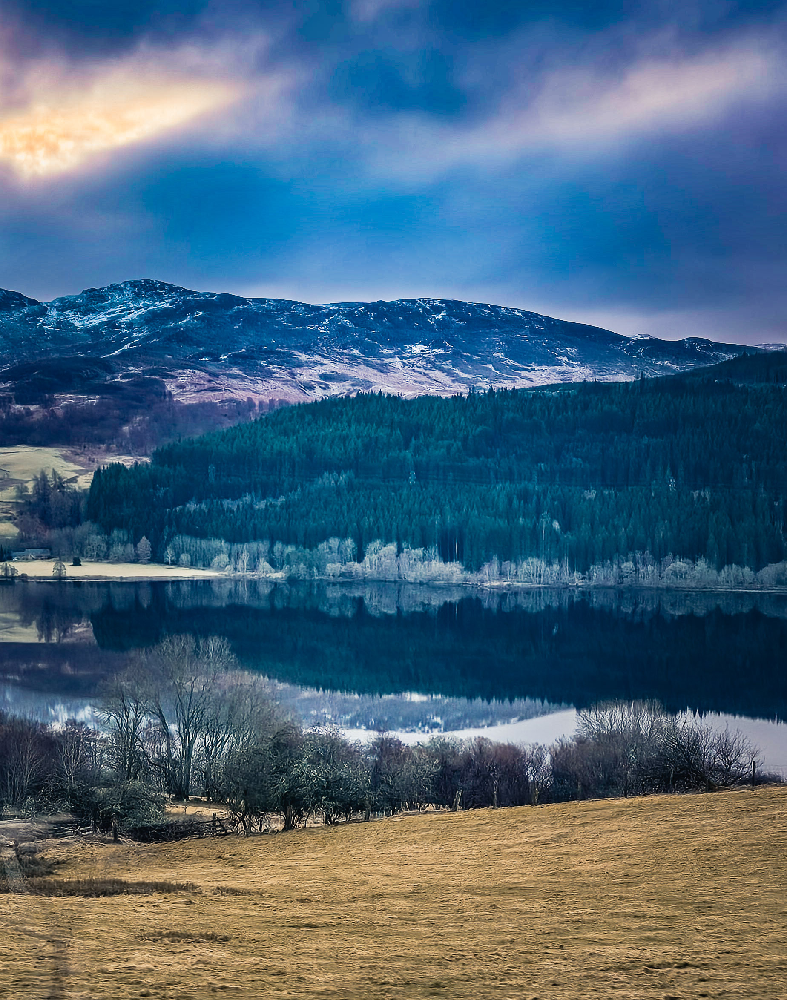
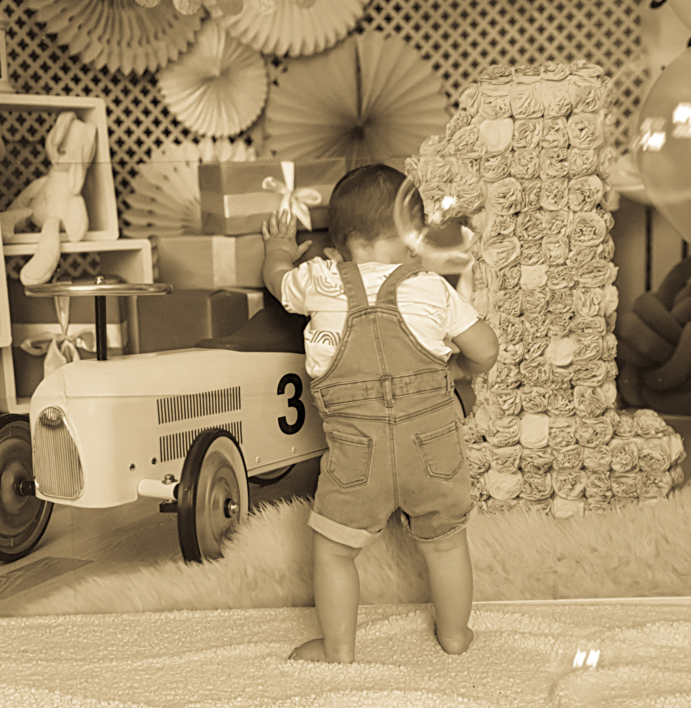
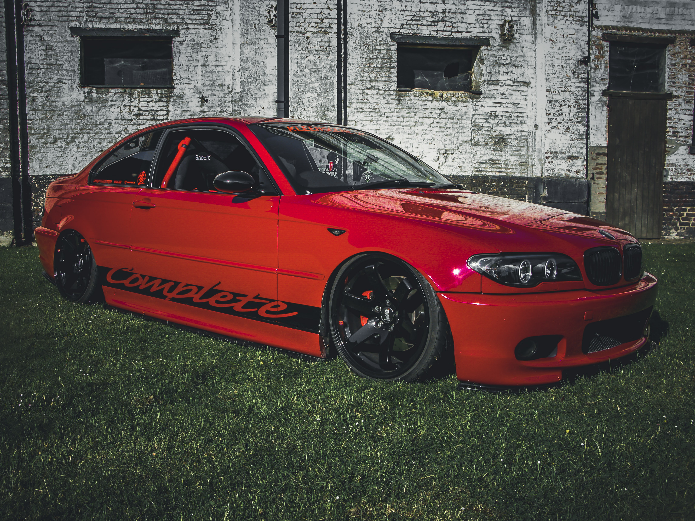
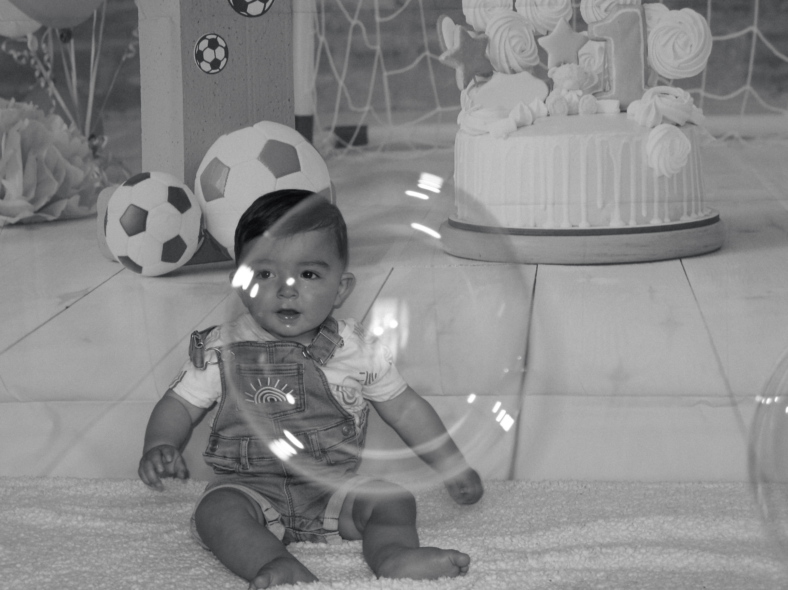
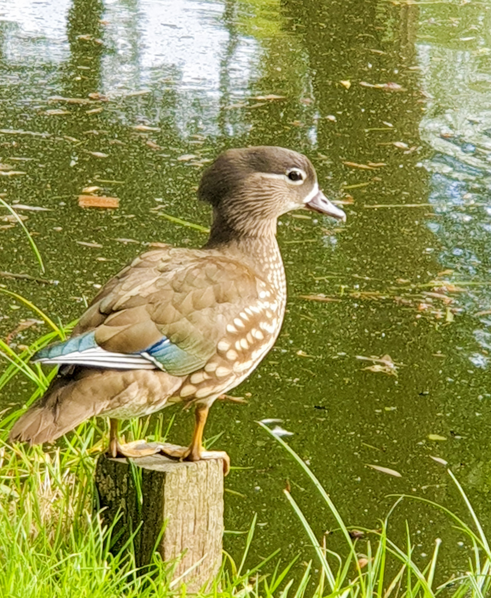
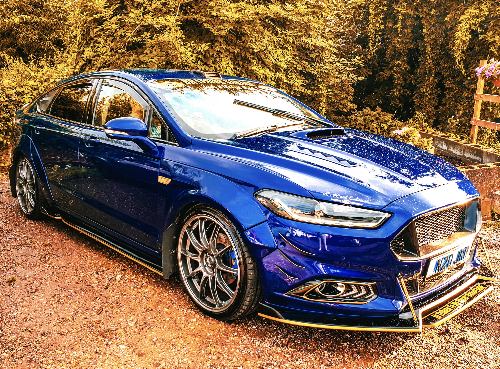

About Grace
This started with my dad's cameras.



Why I picked up a camera
I picked up photography in 2017, after I lost my dad. He was a photographer himself, and he left me some of his cameras. Learning to use them became my way of staying close to something he loved — and it turned into a real, lasting passion of my own.
Mobility issues mean I can't take on large events, so I've built my practice around what I can do well: small, low-key portrait sessions for single people or couples, plus getting out to photograph animals, vehicles, landscapes, and buildings. Everything is edited and sold as a digital download, licensed for you to use as you please — no restrictions, no chasing prints.
What I shoot

Portraits
Single or couple sessions

Animals
Wild and domestic

Vehicles
Cars, bikes & more
Landscape
Wide scenes, natural light
Buildings
Old and new architecture
Want to see the full collection?
Every image I've got ready is on the prints page, licensed as a digital download you're free to use as you please.
Browse prints for sale